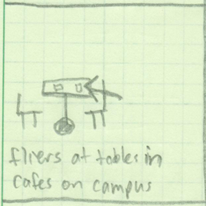
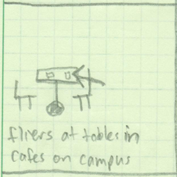

introduction
This process book introduces the steps involved in the design process of HuskyEvents. HuskyEvents is an iPhone application that helps University of Washington students discover events on campus. This process book focuses on my contributions to HuskyEvents's design. Through several design iterations, we have incorporated copious user feedback to develop our design to its current state.
Special thanks to my teammates
Jenna Terhar and Nebiat Abraha

problem
I proposed the concept of helping UW students discover events. On any given day, there can be hundreds of events taking place all over campus. This introduces an interesting signal to noise ratio problem, as students in their right minds would never take the time to read through a complete list of events. However, students would value greatly if they were aware of all the events that might be relevant to them to help them avoid missing, for example, company recruiting events. I am familiar with this problem from several first-hand experiences, and I proposed that our team focus on providing a solution for the tens of thousands UW students.
After a short discussion with my teammates, we decided to focus on this event discovery information problem for this design project. We all thought it was a pertinent problem and were excited by the impact that solving it could have on the UW student body.
ideation
Once we focused on assisting UW students discover events in an efficient manner, we set out to brainstorm possible solutions. We started this process by practicing sketching through designing a new Husky Card. Once we had our bearings, we turned back to our event discovery problem space. I sketched and proposed 40 solutions to the problem, ranging from simple low-tech solutions like passing out fliers to more complicated web-based interfaces with advanced interactive features.
 


scenario
To help us better understand who would be using our solution and how they would be using it, we developed a persona and scenario. Doing this early on in the design process helped us to make feature tradeoff decisions further down the road by optimizing our design for our intended users. To develop our persona and scenario, we compared the value we could provide to various user groups. We ultimately decided that helping students early in their college careers was most rewarding because they had the most time to take advantage of the events and organizations they discovered through our solution.
filter
Between our three group members, we had had 120 proposed solutions on the table from our ideation phase. The next step in our design process was to begin filtering these rough-cut ideas into refined solutions. We set out to find our best three solutions and focused on varying form factors. We chose a web interface, mobile application and large format display. We explored different form factors at this stage because we could change the features within each form factor later in the process. But narrowing our form factor options at this stage helped us to start filtering out solutions that we would not pursue.
Note: I produced the mobile prototype and my teammates made the web and large format display prototypes.
converge
To eliminate two of our proposed solutions, we leaned heavily on user testing. Before we conducted our research, I was thoroughly convinced that we should design a web interface. In my opinion, the scenario made more sense and the features we could support would make the web interface far superior. However, our users unanimously agreed that they would prefer a mobile application. We extensively debated this outcome and ultimately decided to follow the guidance of our users and design a mobile application.
refine
The final step of our design process was to iterate through several versions of our design. Consistent with the rest of the process, we relied on user testing to make data-driven decisions when deciding which features and scenarios we should support. One example is our inclusion of a "food near me" feature that helps users to find events near their location which serve food. We originally included it as a fun feature to experiment with the unique scenarios we could support on a mobile device and we found that our user study groups enjoyed the feature. In addition, we conducted heuristic evaluations to idenitify and eliminate several violations of design heuristics. Through this iterative process of refinement and focus on providing a great experience, our design continuously improved.
reflect
Through working with the mobile application design, I have grown to respect it more than I originally did. Once we had converged and focused on the mobile application, we iterated through some design ideas for possible features to implement. In this process, we defined some scenarios that are best on mobile, such as location awareness. These scenarios excite me and make me buy into solving this problem with a mobile application.
If I were to have the opportunity to re-design this product, I would prefer to build out all three of our design options into intractable prototypes. At that point, I would user test all three designs with a user group that more closely represents those who would use the application.